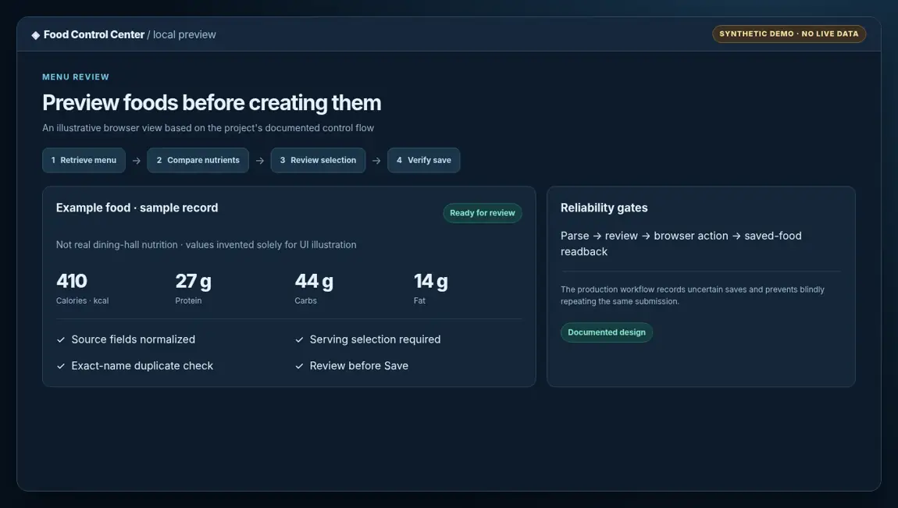
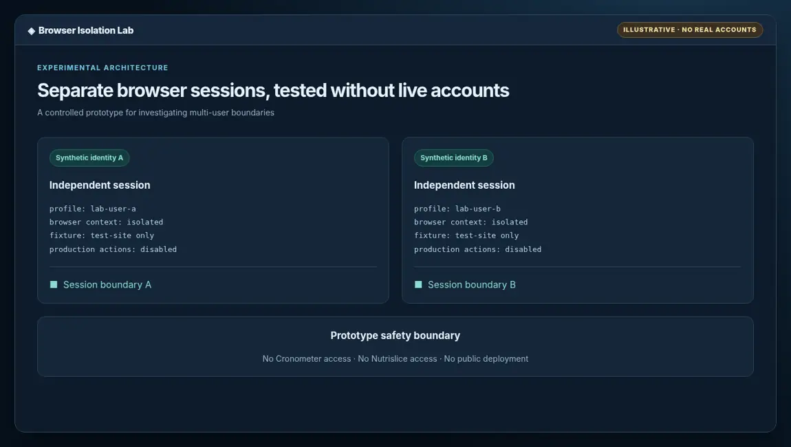
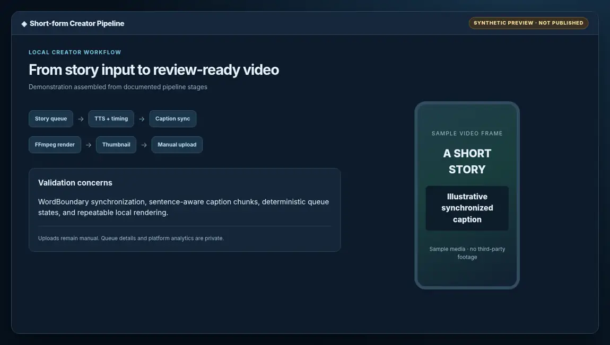
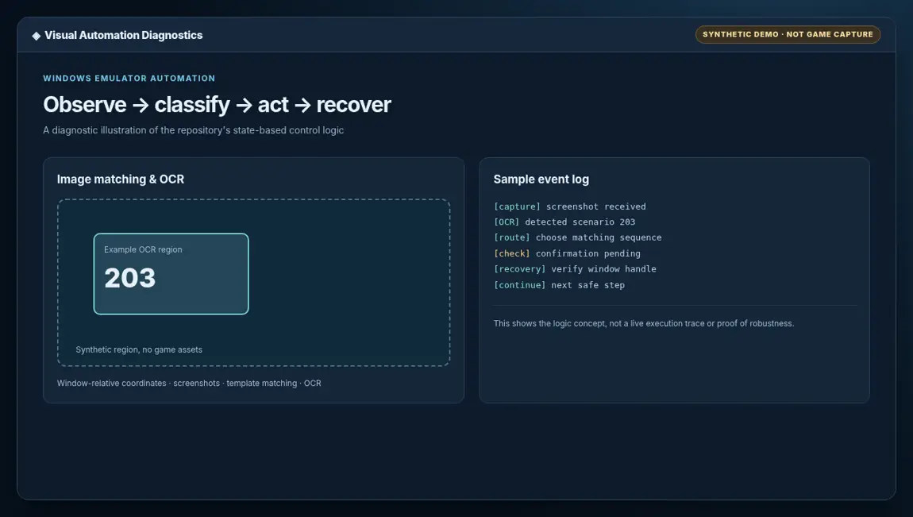

Engineering + software / Project portfolio
Making complex ideas work in practice.
I’m Andrew, an aerospace engineering student at UW–Madison. I build software and engineering tools around real problems, from aircraft concept models to browser automation that has to be reliable outside a perfect test case.
Selected work
Projects & engineering decisions
Architecture, constraints, outcomes, and the places where more validation is needed. Visuals are labeled by source and evidence level.

Supersonic RC aircraft sizing
Preliminary drag, propulsion and inlet methods alongside area-rule diagnostics and explicit model validity gates.

Nutrition automation with verification
Local browser integration with nutrient mapping, review gates, saved-food readback, and documented Windows acceptance.

Multi-user isolation research
Experimental fork exploring session isolation using a controlled local website and two synthetic accounts.

Short-form media automation
Local pipeline combining story intake, speech timing, captions, media renders, state management and cross-platform checks.

Visual automation and OCR
Window-relative screen capture, text recognition, branching execution and recovery for emulator automation.
Project history
Earlier experiments
The progression matters too, including work that is still just a prototype.
How I work
Prototype, test, then harden.
I usually start by isolating the physics or the software state, building a small working version, and comparing it against something observable. I use AI-assisted development when helpful, while keeping verification and engineering judgment separate from generated output.
Evidence and privacy
Clear about what was proven.
Project documents reflect repository contents and historical internal test reports, not fresh execution in this portfolio. The gallery includes one repository-derived demo plot and clearly labeled synthetic illustrations. No credential, private browser profile, personal nutrition history, or proprietary team source is published.